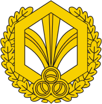

<nz-layout class="app-layout">
  <nz-sider class="menu-sidebar"
            nzCollapsible
            nzWidth="256px"
            nzBreakpoint="md"
            [(nzCollapsed)]="isCollapsed"
            [nzTrigger]="null">
    <div class="sidebar-logo">
      <a routerLink="/">
        
        <h1>РТС - РХБЗ</h1>
      </a>
    </div>
    <ul nz-menu nzTheme="dark" nzMode="inline" [nzInlineCollapsed]="isCollapsed">
     
          <li nz-menu-item nzMatchRouter>
            <a routerLink="/rz">Разведка</a>
          </li>
          <li nz-menu-item nzMatchRouter>
            <a routerLink="/so">Спецобработка</a>
          </li>
          <li nz-menu-item nzMatchRouter>
            <a routerLink="/am">Аэрозольная маскировка</a>
          </li>
          <li nz-menu-item nzMatchRouter>
            <a routerLink="/fire">Огневые подразделения</a>
          </li>
        
    </ul>
  </nz-sider>
  <nz-layout>
    <nz-header>
      <div class="app-header">
        <span class="header-trigger" (click)="isCollapsed = !isCollapsed">
            <i class="trigger"
               nz-icon
               [nzType]="isCollapsed ? 'menu-unfold' : 'menu-fold'"
            ></i>
        </span>
      </div>
    </nz-header>
    <nz-content>
      <div class="inner-content">
        <router-outlet></router-outlet>
      </div>
    </nz-content>
  </nz-layout>
</nz-layout>
